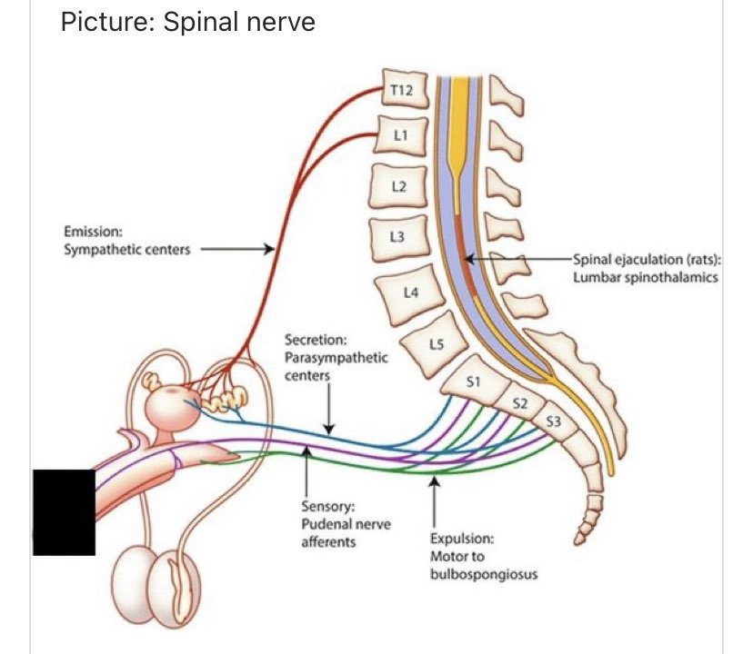
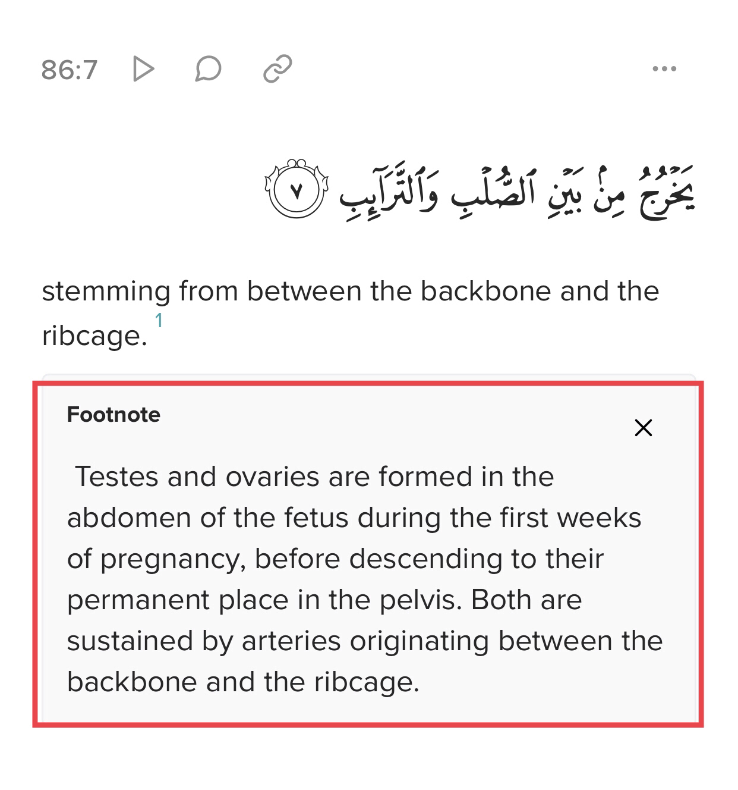
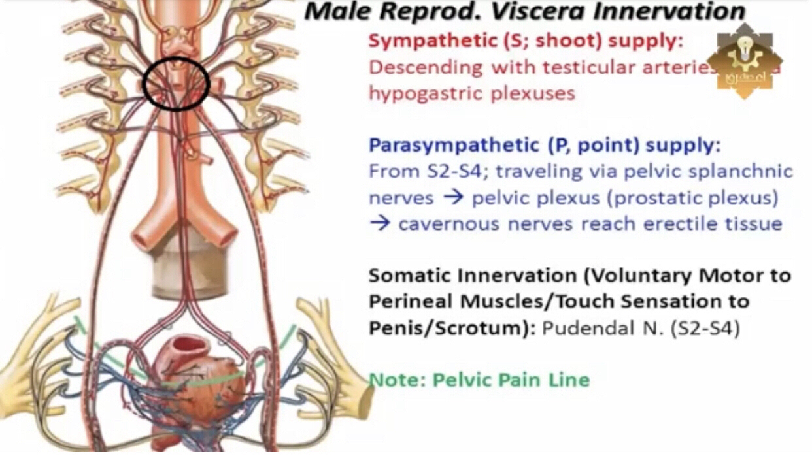
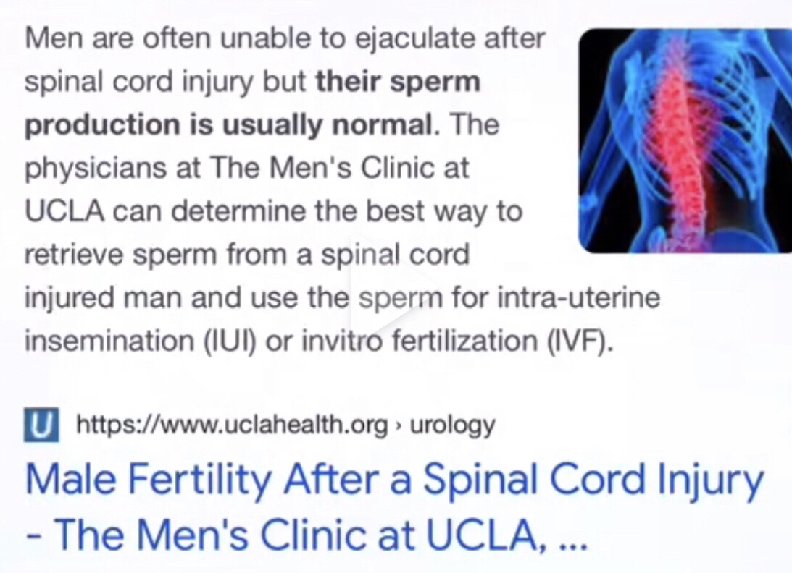
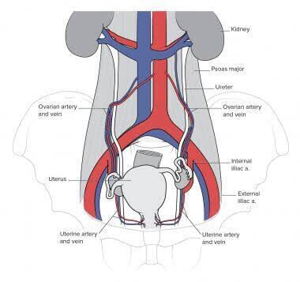
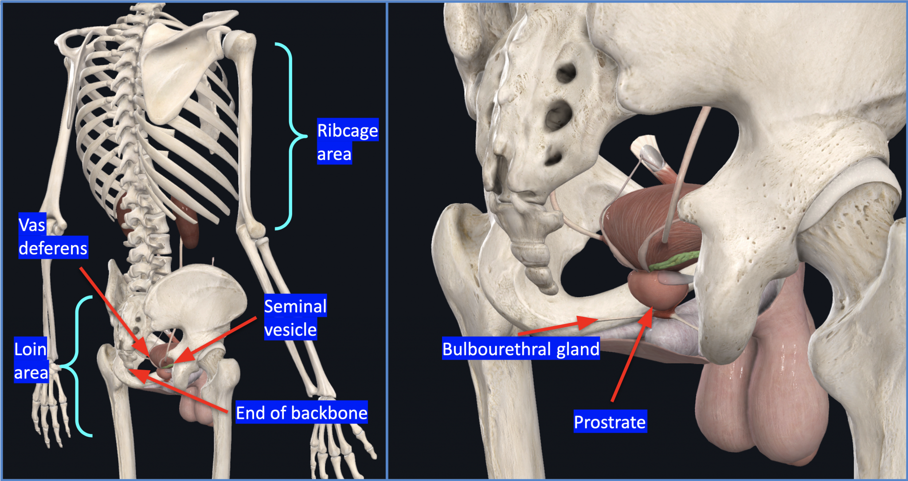
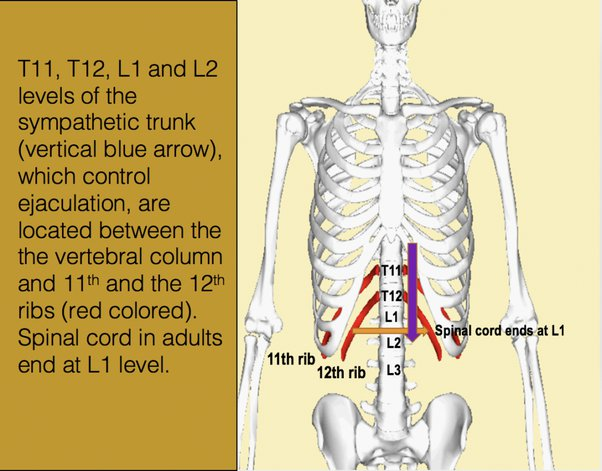

Sperm From The Backbone?
A argument which is frequently used is the verse regarding the idea that the sperm comes from the rib
and backbone. The argument Is that we know the sperm comes from the balls of the penis.
Now let’s get to refuting this. Let’s remember the verse has ways to translate it, therefore we can’t
restrict to one translation. The refutation is that it means that the gushing fluid is from the backbones.
I will avoid going into details as it can get uncomfortable.
The child emerges from between the backbone and the rib when the mother gives birth, the specific lines
that allow for the contractions that the man has in order to ejaculate is found between, with regards
to the neural circuit system.



Ok so what does tafsir ibn kathir say ?
It says proceeding from what does proceeding from mean according to Oxford dictionary
originate from.
"his claim that all power proceeded from God"
Ok so lets see according to Harissions dict and the black circle you will find the arteri that feeds
the testicles come between the backbone and the ribs even according to the research by uclahealth people
who have spine problems have less sperm production
-Source: https://www.uclahealth.org/urology/mens-clinic/spinal-cord-injury-fertility
That is because the place of production is between the backbone and the ribs , the verse doesn’t say
the fluid from their it is talking about the egg and the Sperm they both originate from their
Also the verse isn’t talking about women but even if some scholars considered it it is also correct
-Source: https://emedicine.medscape.com/article/1949127-overview
Basically it is the origin how can an illeterate man know this in the desert 1440 years ago


the meaning of sulb is sexual organ and rhe meaning of tarib is rib. the quran states that the spurgling
fluid involved in the reproduction of a man comes from sulb (sexual organ) and tarib (ribs) the quran is
not sperm rather its saying fluid. the glands which form the fluid are the seminal gland and the
bulbourethral gland. seminal gland: seminal glands are located in the pelvis and below the urinary
bladder, they seperate fluid which partly composes semen. postrate gland: the postrate gland is about
the size of a hazlenut and is located in between the bladded and it sorrounds the urethra, this is a
tube that carries urine out the semen body.
bulbourethral gland also called the cowper’s gland, either of 2 pea-shaped glands in the male body,
located beneath the postrate gland and at the begining of the internal portion of a penis; they add
fluids to semen during the process of ejaculation. it means that the glands to produce semen is
located between the sexual organ and ribs anteroposteriocly. all the glands produce lie in this region,
thus is not a scientific error. similarly female ovaries are also located in this region (between sulb
and tarib) and the spurging fluid of a women is also involved in the reproduction.
a man contributes sperm; this sperm cannot reach the female by itself rather it has to mix with the
semen (a viscous fluid that aids transportation). similarly, a woman contributes an egg cannot travel
through a follopian tube and uteras without being mixed with the fluid.
obviously this fluid is not sperm however its like sperm in that it helps the follicle to travel,
in fact during ovulation a great ammount of fluid is released by the female from a variety of
sources in her body.
ovulation is assumed to take place on the day the women has the most ammount of wet fluid.
when a female is fertile each month of graafian follicle travels to the surface of the ovary, bursts,
then releases the egg and fluid
the cilia in the fallopian tube pushes the fluid and the egg foward towards the uteras. its the fluid
which is in the main course that causes the cilia to beat and thereby pushes the egg to its destination.
without the fluid the egg probably wouldnt make it.
an article on the topic called the effect on ovarian follicular on fallopian tube ciliary beat frequency
and reproduction-online.org comfirms this.
i could provide many more authoritative that proves the egg must travel in fluid, which is secreted
from a varity of sources in a female body and let it also be clear that neither the quran or the hadith
claims that a women has sperm rather they simply state that she has sexual fluid which is a scientific
fact.
https://islamqa.info/en/answers/118879/commentary-on-the-verse-he-is-created-from-a-water-gushing-forth%
C2%A0proceeding-from-between-the-back-bone-and-the-ribs-at-taariq-866-7
There are 3 main opinions on understanding this verse [86:5-7], today I will be explaining the 1st one:
It is important to state that the Qur’ān does not refer to sperm, or a word that is closer to the
meaning of sperm,
it mentions water or fluid. Nuṭfat (نُّطْفَة) is not used, which refers to a small drop of fluid.
The Qur’ān uses the word mā’a (مَآء) which means fluid or water.
This first opinion was held by a large group of scholars, and it refers to a gushing fluid exiting
from between the backbone or loins and the ribs. This view is not a scientific error. In fact,
around 70% of the ejaculatory fluid that contains sperm comes from the seminal vesicles, which are
parallel to the backbone, and around 20% from the prostrate and 5% from the bulbourethral gland
which are in the loin area. [See Kierszenbaum, L. Abraham and Tres, L. Laura. (2020) Histology and
Cell Biology: An Introduction to Pathology. Fifth Edition. Elsevier, p. 771;
https://www.labce.com/spg62816_composition_of_semen.aspx.]
The seminal vesicles, prostrate and bulbourethral gland are either between the backbone or loins
and the ribs. It is important to note that the word for the backbone in the Arabic language includes
the tailbone or coccyx. As can be seen in the image below the seminal vesicles, prostrate and
bulbourethral gland are between the backbone or loins and the ribs, and both these and the testicles
are between the backbone or loins and the ribs. This is in line with our current understanding of
human physiology.

Source for response:
https://sapienceinstitute.org/does-the-quran-make-a-mistake-on-where-semen-or-sperm-is-produced/
Dr. Muhammad ‘Ali al-Baarr (may Allah preserve him) says:
The verse says that the gushing water comes from between the backbone and the ribs, and we say that this
water (semen) is formed rather in the testes as the egg is formed in the ovary in the woman.
o how can we reconcile the scientific fact with the Qur’anic fact?
The testes and ovary are formed from the genital tubercle between the sulb and taraa’ib of the foetus.
The sulb is the spinal column and the taraa’ib are the ribs. The testes and ovaries are formed in this
exact region, i.e., between the backbone and the ribs, then the testes descend gradually until they
reach the scrotum (outside the abdomen) at the end of the seventh month of gestation; the ovaries
descend to the female’s pelvis. … However, nourishment continues to reach the testes or ovaries via
the circulatory, nervous and lymphatic systems from the point where they originated, i.e.,
from between the backbone and ribs. The arteries that supply the testes or ovaries come from the aorta,
from between the backbone and the ribs, and the veins coming from the testes end in the same region,
i.e., between the backbone and the ribs. The nerves to the testes and ovaries come from a group of
nerves that exist beneath the stomach, between the backbone and the ribs. The lymphatic vessels also
end in the same area, i.e., between the backbone and the ribs.
maariful quran tafsir and
Az-Zamakhshari said: If you say: what is the connection between the words “So let man see…” [v. 5]
and the verse that comes before it (“There is no human being but has a watcher over him”-- v. 4)?
I would say: The connection is that when He said that over every human being there is a watcher,
He followed that by advising man to think of his starting point in the first creation, so that he
may know that the One Who created him is able to recreate him and recompense him, so let him strive
for the Day of resurrection and recompense, and let him not cause his watcher to record anything
but that which will make him happy in the Hereafter.
End quote from Tafseer al-Kashshaaf.
